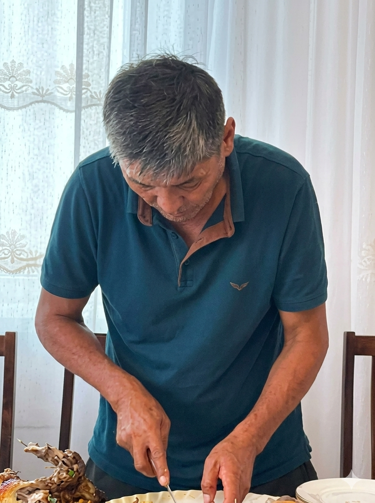

Jumakeev Azizbek
Aзиз или же позывной Ажук закперил за собой ассоциацию
с угрозой ведь вседа при непослушании детей запугивали этим именем
Физически сильнейший член семьи
fav color:
generation:
X

Nostalgia